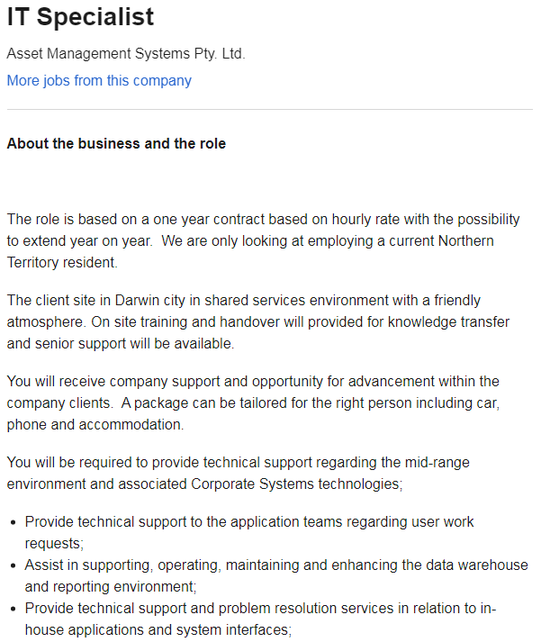

My name is Marek Hutchinson – Goncz and I am Australian. My family immigrated to Australia from England before I was born. I am currently completing a Batchelor of Business and have various certificates through my work with Emergency Services. I speak English at home with my family and I am not fluent in any other languages. I have a new puppy named Vulcan, he is a Rottweiler and I am currently trying to train him.
Marek Hutchinson - Goncz
ePortfolio
- #:S3819448
- e: s3819448@stuent.rmit.edu.au
- : https://www.seek.com.au/job/50074490?type=standard#searchRequestToken=35b1b0f2-640a-4705-a295-0957281900d3
- Lively
- Energetic
- Quick Witted
- Clever
- Inventive
- Imaginative
- Entrepreneurial
- Futuristic
- Analytical
- Logical
- Objective
- Unsentimental
- Open - Minded
- Adaptable
- Spontaneous
- Changeable
- Statista 2020, forecast-of-smartphone-users-in-australia,viewed 11 June 2020, https://www.statista.com/statistics/467753/forecast-of-smartphone-users-in-australia/
- Statista 2020, australia-number-of-births,viewed 11 June 2020, https://www.statista.com/statistics/607878/australia-number-of-births/
- Seek 2020,standard search, 9 June 2020,https://www.seek.com.au/job/50074490?type=standard#searchRequestToken=35b1b0f2-640a-4705-a295-0957281900d3s
- Balance Careers, information technology it skills, viewed 10 June 2020,https://www.thebalancecareers.com/list-of-information-technology-it-skills-2062410
- Eduction Planner, learning style quiz,viewed 07 June 2020, http://www.educationplanner.org/students/self-assessments/learning-styles-quiz.shtml?event=results&A=8&V=6&T=6
- Truity, facet scores,viewed 11 June 2020, https://www.truity.com/sites/default/files/tfsamplereport.html#facetscores
- Course hero, creativity quiz, viewed 11 June 2020, https://www.coursehero.com/file/21824741/Creativity-Quiz-Creativity-Tools-From-MindToolscom/
Personal Information
Interest in IT
I have always held a keen interest in IT in relation to online gaming as well as the most current technology of the day. I remember my interest in IT started when I was young and my parents took me to a library where you could play “Age of Empires” on a library computer. Having no computer or internet at home I found this to be fantastic and ever since have held a keen interest in IT. Apart from some online gaming and basic knowledge of how to install and uninstall programs I have a very limited knowledge of IT. I had never even heard of HTML until this assignment. I have found this IT course to be a steep learning curve so far but I am enjoying the challenge.
I came to RMIT as I am currently completing my degree with Open Universities Australia due to working full time. OUA select which universities each unit is to be completed with. So far I have completed units at RMIT and the University of South Australia.
I am hoping to gain a broader understanding of IT systems especially how cloud computing works. I am also interested in the field of robotics and programming. I am enjoying the challenge of creating this web page but having never done anything like this before I am finding it extremely difficult.
Ideal Job
IT SPECIALIST
Description-



The position of IT Specialist involves providing IT related services and support to the Northern Territory Government. The primary role of the position would be solving IT related problems and implementing changes in IT systems as required. This position appeals to me as I would not have to relocate from my home city. It is also appealing due to the challenge it presents of having to solve complex problems for an important organisation. Finally the pay at ninety five dollars an hour is extremely satisfying.
Skills I need
Extensive programming experience as well as extensive experience in servers. You would also need knowledge of the workings of the Northern Territory Government as well as a well-rounded IT knowledge base across multiple different IT fields. Excellent communication skills as well as report writing skills would be a must.
Skills I Have
I currently have excellent communication skills as well as extensive experience in report writing. I also have experience in project management and leadership roles, as well as a proven track record in team building and team work.
Learning Plan
I would require far greater knowledge in IT systems especially programming experience in which I have none. I would obtain these skills from completing this current IT course and other IT related courses. I would also need to have skills and knowledge in the following areas: networking, data management, understanding of operating systems and coding, including but not limited to JavaScript and Python. I would obtain these skills from university study as well as online courses. I would also consider a local area tutor to help me.
Myers-Briggs Test Results
You're an ENTP
You are an inspired innovator, motivated to find new solutions to intellectually challenging problems. You are curious and clever, and seek to comprehend the people, systems, and principles that surround you. Open-minded and unconventional, you want to analyze, understand, and influence other people.
E = Extraversion
N = Intuition
T = Thinking
P = Perceiving
Learning Test Results
I am Auditory Learner
If you are an auditory learner, you learn by hearing and listening. You understand and remember things you have heard. You store information by the way it sounds, and you have an easier time understanding spoken instructions than written ones. You often learn by reading out loud because you have to hear it or speak it in order to know it. As an auditory learner, you probably hum or talk to yourself or others if you become bored. People may think you are not paying attention, even though you may be hearing and understanding everything being said.
Creativity Test Results
I am a "Work In Progress"
You've had some successes,so now it's time to let loose and stretch yourself. Share your ideas and perspectives with others, and ask them how they view problems. Adopt a collaborative approach to problem finding, and work actively with others to create and innovate. The tools and resources below will help you get to the next level of creativity.
The results and teamwork
I found the results of the Myers Briggs test to be great. They were all very positive. In relation to the Learning Styles Test I agree that I am an Auditory Learner. I have completed numerous tests and exams in my current workplace and have always found talking through the questions helped me learn and remember the information. The creativity test was probably the worst result as it was telling me to adopt a more collaborative approach. In terms of how this may influence behaviour in a team, I think I need to take on board the results of the creativity test and work harder on sharing my ideas and perspectives. I have always found team work difficult preferring to work by myself on assignments. I need to take the information from all three tests into account and form a team with people who have outgoing personalities that balance my out my own. I understand my team mates will have different results and have different personalities. People with outgoing personalities will be different to me and I can be open and provide information about myself to my team mates so they know more about me and dont think I am not interested in the project.
Project Idea
Overview
I recently came up with the idea for a baby related directory application for smart phones. The application will be free and users can access the application via an app store. The application will list different baby and child related services in the area of your choice. This can include everything from medical services to food. The application will be commercially viable by adding advertisements of relevant products to the side banners of the page.The application will streamline the process for people looking for baby related services in their area.
Motivation
This project will be useful as time and time again I have become frustrated when searching through google to locate services that I required for my recently born baby. There are 18.44 million smart phone users in Australia alone (Statista.com) and 315 000 babies born yearly in Australia (Statista.com). This shows that there is an enormous market for new parents looking for assistance and nearly all of them actively use smart phones. This solution will save parents time by having a centralised database for all baby and toddler related services. The site will also provide advice and assistance through the use of product reviews and message boards where questions can be asked and answered.
Description
The product will be an easy to use and interactive application downloadable from application stores on smart phones or internet connected devices. The product will be named “The Baby Pages”. The Baby Pages primary goal will be to make it easier for parents to locate services for their babies in one centralised location. The product will feature a title menu with the primary features being Medical, Retail, Help Services, Food and Beverage. There will be title appropriate pictures next to each heading. This application will be able to provide a detailed list of existing businesses under the above heading that new and established parents would utilise on a regular or semi-regular basis. The application will feature location settings to allow the application to direct the user to the businesses in their city or area. The area setting could be set to different distances which would include and exclude certain businesses in the radius chosen by the user. My design would be uncomplicated and easy to use. The user of the application could search either alphabetically or via a search bar under the required service they are trying to locate. For example, Jane a mother is trying to locate a speech therapist for her child who has speech issues. Jane would use the application she downloaded for free to select “Medical”. She could either then scroll down to “S” or simply search “speech therapist” in the search bar. The application would then take Jane to a list of all speech therapists in the radius defined by her. The search would list the therapists contact information, address and any reviews made by users. The application could later link in with google maps if the user wished to attend the stores location. Similarly if the user wished to call the business or service selected the app could link into the phone application on the users smart phone. The application would be commercially viable by the use of advertisement banners in the application that would advertise products that are related to the application only. Thought could also be given to charging for the use of the application by businesses only once a strong customer base was established.
Tools and Technologies
There is a lot of different software that can be utilised to create an application, some of which includes Appery.io and The App Builder. A smart thing to do is to create mockup sketches of your idea. For this you would need equipment to sketch by hand such as pencils etc. There is also software such as “Balsamiq Mockups” that you can use if you are not good at drawing. There are open source tools such as Hybrid Apps which can be used to create an application. I would also require servers to run the application which I could buy or rent.
Skills Required
The creation of this application would require somebody with the technical skills to create the software. You also need skills in graphic design and marketing to get the idea of your app out there. The use of location services in the program will in my opinion be the hardest part of the process, with someone requiring knowledge on how those funtions work. And finally you would require skills in avertisement in order to source clients to advertise on your application.
Outcome
If this project is successful it will revolutionise the way parents search for and utilise services in the Australian baby services market. The application has the potential to be financially viable and assist various child related companies with adverting. The overall outcome will be an application that provides a valuable service to the community which streamlines processes for already stressed and tired new parents.